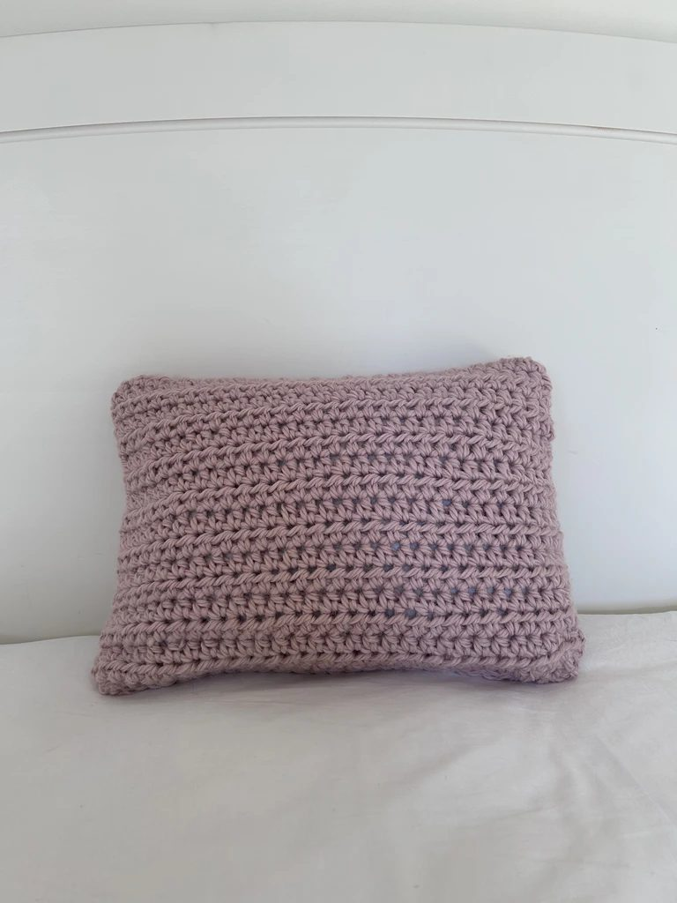
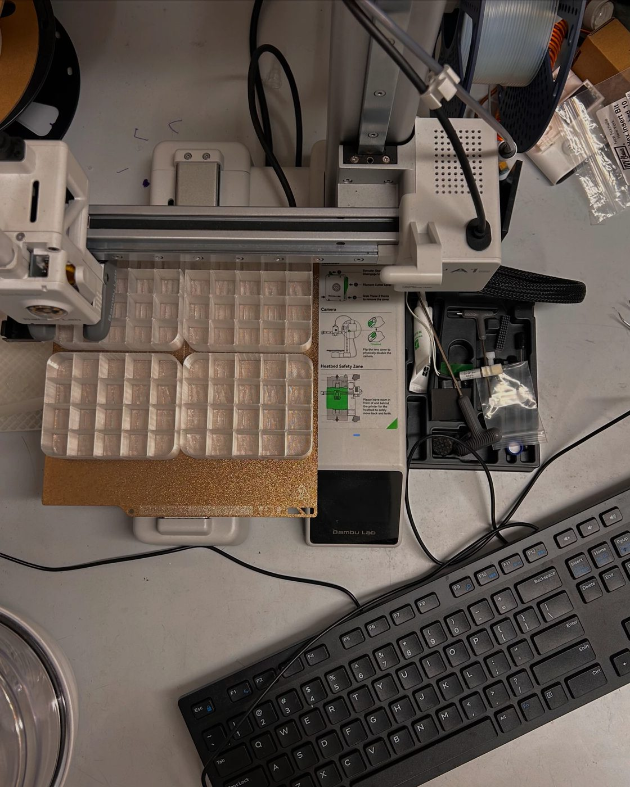
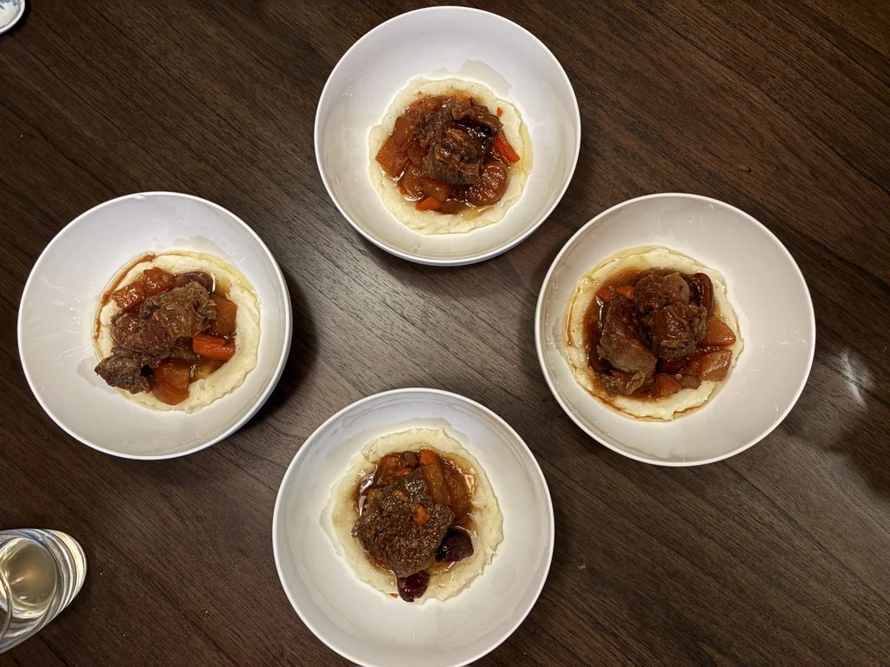
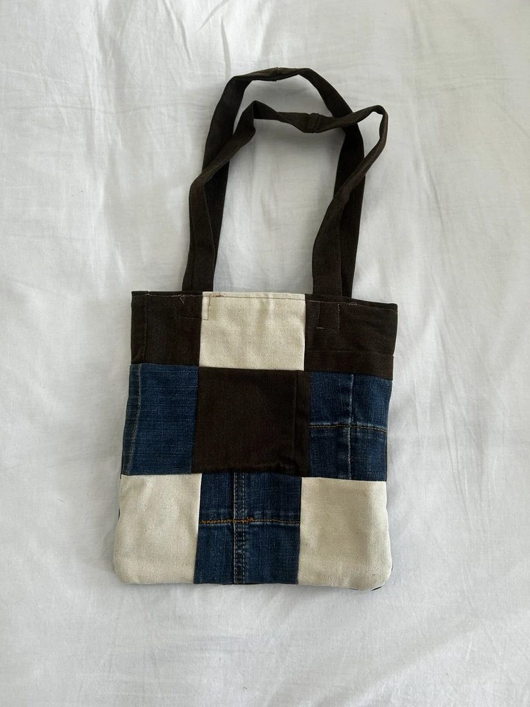
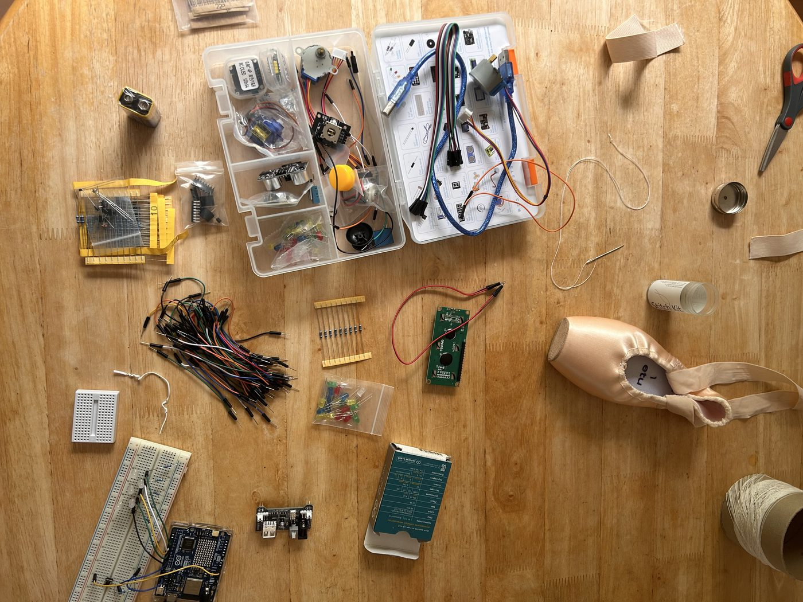
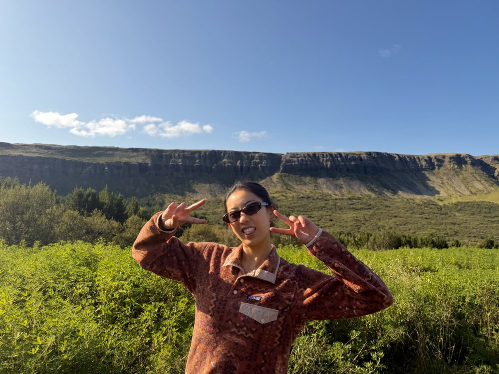

About Me
In my free time, I love exploring my passion of building and creating through hands-on mediums. Since I was young, I've been drawn to creation, whether through baking with my mom or watercoloring late into the night.


My name is Sophie Zhu. I'm a Junior at Columbia studying chemical engineering, with a minor in AI.
Learn more about me here